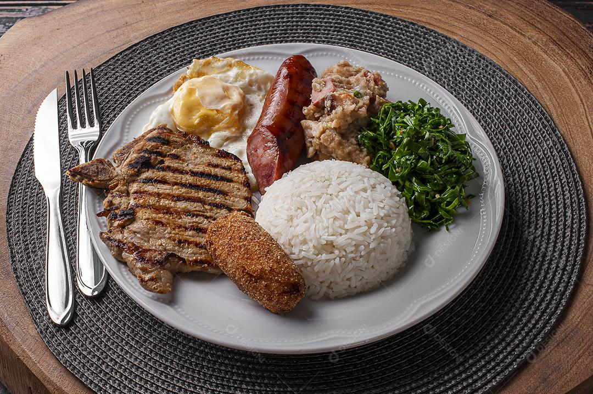
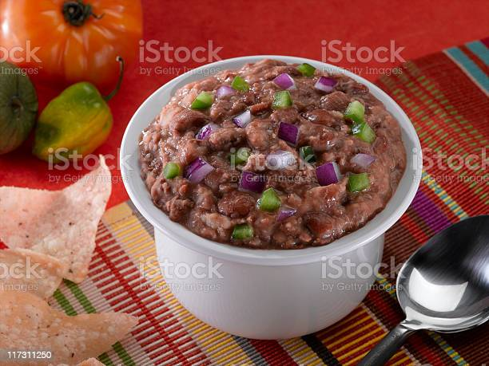
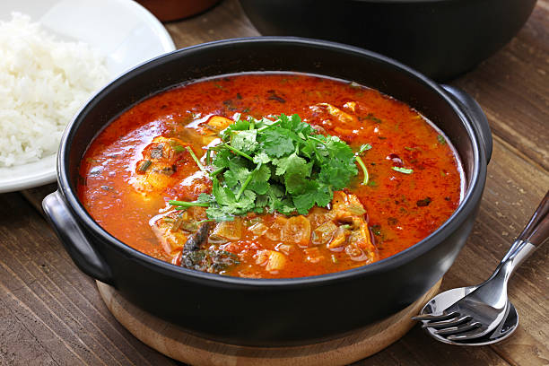
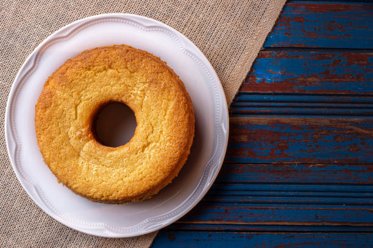

Virado à Paulista: um prato tradicional de São Paulo, é feito com feijão cozido, arroz, bisteca de porco frita, couve refogada, ovo frito, torresmo e banana frita. É uma refeição completa e saborosa.
Pão de Queijo: originário de Minas Gerais, o pão de queijo é um quitute feito com polvilho azedo, queijo (geralmente queijo minas) e ovos. É assado e fica com uma casquinha crocante por fora e macio por dentro.

Tutu de Feijão: uma especialidade mineira, é feito com feijão-preto cozido, que é batido e temperado com alho, cebola e outros temperos. É servido com arroz, couve refogada, torresmo, linguiça e outros acompanhamentos.
Moqueca Capixaba: típica do Espírito Santo, é um prato de peixe cozido em um molho à base de azeite de oliva, coentro, tomate, cebola e outros temperos. É servido com pirão de peixe e arroz branco.
Bolo de fubá: um bolo tradicional feito com fubá (farinha de milho), açúcar, ovos, leite, manteiga e erva-doce. É uma sobremesa popular e muito apreciada na região.
